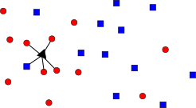
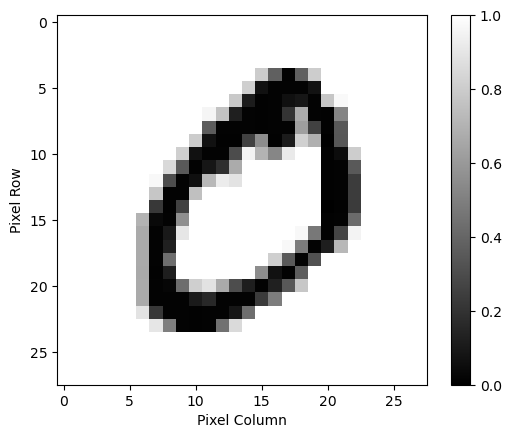
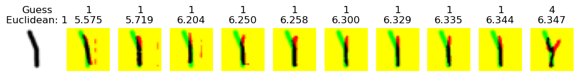
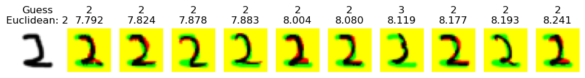
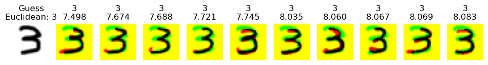
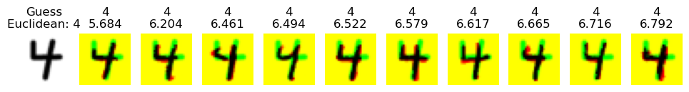
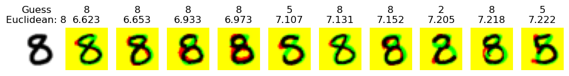
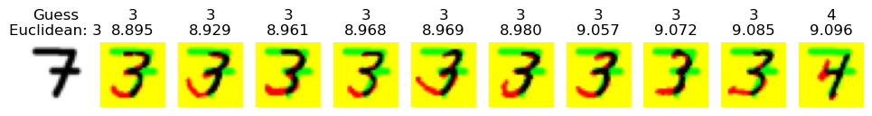
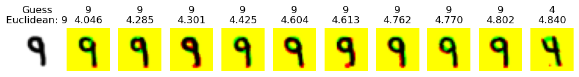

HW6: Nearest Neighbors for Digit Classification
Chris Tralie
Background
In this assignment, we'll explore an example of supervised learning, which is the process of teaching a computer to predict what some input is based on a set of labeled examples that we give it beforehand. We'll look specifically at the example of classifying 28x28 images of the digits 0-9 from the MNIST dataset. We're not always fortunate enough to have data that's labeled like this, but when we do, there are a variety of techniques we can use to learn models of the different classes.
In this assignment, we explore a supervised learning technique known as nearest neighbors. If we have a way of measuring a distance between two different data points, then we can apply this technique. For example, let's suppose we had a labeled set of data points in two classes: red circles and blue squares. Then, let's say we wanted to guess which of the two classes some new data point was in. We'll depict this data point as a black triangle, as shown below

The K-nearest neighbors technique simply finds the K closest labeled examples, as measured by the distance, and uses them to vote on the class identity of this new point. In the above example, we choose K = 5 for the 5 nearest neighbors, and we happen to get 4 votes for a red circle and 1 vote for a blue square, so we would label this new data point as a red circle.
Overall, we can think of nearest neighbors as a supervised learning technique that memorizes examples. This means it's only as good as the examples, and it will do better with a higher number and variety of examples, which we don't always have access to. By contrast, other learning techniques will try to better generalize some knowledge to new examples. But we'll start with this "memorizer" first.
Getting Started / Loading Data
First, let's see how to load the digits and the format I've set them up in for this assignment. First, click here to download the starter code. You'll be editing the file digits.py. Start by adding the following code to the bottom of that file:
When you run it, you should see an image like this:

The digits variable is a 4 dimensional array that holds all of our examples. The indices are
digits[0-9][example][pixel row][pixel column]
So, for example,
digits[4][301][5][8]
Task 1: Distance Computation (10 Points)
The first task we have is to define a suitable distance function for comparing images of digits. Since the images are all the same size, we can use what's known as the Euclidean distance formula. This is actually just the pythagorean theorem, but in higher dimensions. In English, it is the square root of the sum of squared differences over all pixels. Mathematically, we'd write it as follows, assuming zero-indexing of the rows and columns of two images I and J:
\[ d(I, J) = \sqrt{ \sum_{i=0}^{27} \sum_{j=0}^{27} (I[i][j] - J[i][j])^2 } \]
Your Task
Write a method get_distance that takes in two images and which returns the Euclidean distance between them.
Below are a few examples of inputs and outputs of get_distance on different digits that you can check, sorted in increasing order of distance of those pairs. Note how, for the most part, digits that are in the same class have lower distances, which is what we would hope for if nearest neighbors is going to work well:
| d(digits[1][6687], digits[1][714]) | 4.613 |
| d(digits[6][2176], digits[6][1956]) | 8.495 |
| d(digits[9][4369], digits[9][4484]) | 8.575 |
| d(digits[3][1033], digits[7][4373]) | 9.086 |
| d(digits[8][1701], digits[1][537]) | 9.510 |
| d(digits[2][2292], digits[2][151]) | 9.731 |
| d(digits[5][802], digits[5][2176]) | 9.780 |
| d(digits[3][2723], digits[3][3531]) | 9.856 |
| d(digits[4][2930], digits[4][1207]) | 9.971 |
| d(digits[7][6021], digits[7][3622]) | 10.041 |
| d(digits[8][2163], digits[9][5072]) | 10.052 |
| d(digits[1][797], digits[3][659]) | 10.189 |
| d(digits[0][4735], digits[0][544]) | 10.518 |
| d(digits[6][2135], digits[7][2222]) | 10.673 |
| d(digits[8][3560], digits[8][756]) | 10.886 |
| d(digits[3][2046], digits[5][1871]) | 10.887 |
| d(digits[0][99], digits[2][2008]) | 11.212 |
| d(digits[3][3337], digits[7][2745]) | 11.389 |
| d(digits[2][3468], digits[4][705]) | 11.515 |
| d(digits[5][4931], digits[0][4859]) | 12.351 |
NOTE This is not necessarily the best distance for this task, but the Euclidean distance is often the first thing we try
Task 2: K-Nearest Neighbors Classification (20 Points)
Now that you have a distance function, you can implement the k-nearest neighbors algorithm
Your Task
Create a method classify_digit(I, digits, K), where I is the image you want to classify, digits is the list of digits that you loaded, and K is the number of nearest neighbors to use. In this method, compute distances between I and all of the digits, keep track of the smallest K distances, and classify the digit as the class which occurs the most in the nearest K
Examples
You can draw your own digits with the program paint.py and see what your classifier gives. Below are a few examples, not all of which are classified correctly! But such is life:






